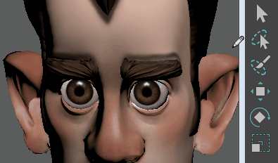

- 若要使用“绘制选择工具”(Paint Selection Tool)，请单击工具箱中的
 图标。
图标。
双击“绘制选择工具”(Paint Selection Tool)图标以显示其选项。
“绘制选择工具”(Paint Selection Tool)允许您在组件上方拖动光标以选择相应的组件。如果只要处理选定区域的一部分，这将非常有用。有关如何使用该工具或更改笔刷大小的信息，请参见通过绘制选择组件。若要退出“绘制选择工具”(Paint Selection Tool)，请切换到其他工具。例如，按 Q 键选择“选择工具”(Select Tool)  。
。
。

另请参见 Artisan 笔刷工具的工作方式。
“绘制选择工具”(Paint Selection Tool)选项
下述选项是“绘制选择工具”(Paint Selection Tool)所特有的。有关“绘制选择工具”(Paint Selection Tool)设置编辑器中其他选项和部分的描述，请参见公用 Artisan 笔刷工具设置。
绘制操作(Paint Operations)
选择以下绘制操作之一。
- 选择(Select)
-
选择已绘制的组件。
- 取消选择(Unselect)
-
取消选择选定的已绘制组件。
- 切换(Toggle)
-
在选定的过滤器与取消选定的组件之间进行切换。
提示：- 若要在选中“选择”(Select)时取消选择选定的组件，请按住 Ctrl 键，然后在其上进行绘制。同样，当选中“取消选择”(Unselect)时，请按住 Shift 键并进行绘制以选择未选定的组件。
- 按住 U 键单击并从显示的标记菜单（而不是“工具设置”(Tool Settings)编辑器）中选择绘制操作。
- 添加到当前选择(Add to Current Selection)
-
默认情况下，该选项处于启用状态，这样可将每个笔划添加到上一个选择。这意味着不必按 Shift 键，即可使笔刷笔划选择、取消选择或切换更多组件的选择。如果希望每个笔划覆盖以前的笔划，请禁用“添加到当前选择”(Add to Current Selection)。
- 全选(Select All)
-
选择选定曲面上的所有组件。
- 取消全选
-
取消选择选定曲面上的所有选定组件。
- 切换全部(Toggle All)
-
选择所有未选定组件，然后取消选择选定曲面上的所有选定组件。